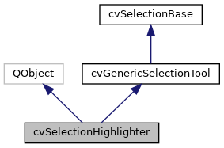
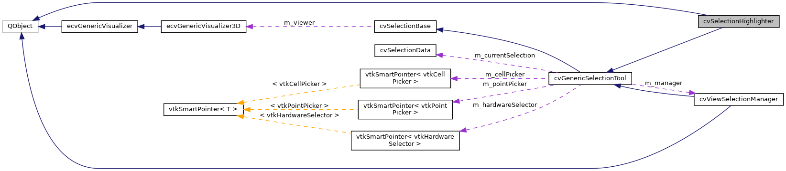

|
ACloudViewer
3.9.4
A Modern Library for 3D Data Processing
|
|
ACloudViewer
3.9.4
A Modern Library for 3D Data Processing
|
Helper class for highlighting selected elements in the visualizer. More...
#include <cvSelectionHighlighter.h>


Public Types | |
| enum | HighlightMode { HOVER , PRESELECTED , SELECTED , BOUNDARY } |
| Highlight mode (Enhanced multi-level highlighting) More... | |
 Public Types inherited from cvGenericSelectionTool Public Types inherited from cvGenericSelectionTool | |
| using | SelectionMode = ::SelectionMode |
| Selection mode Now using global SelectionMode enum from cvSelectionTypes.h. More... | |
| using | SelectionModifier = ::SelectionModifier |
| Selection modifier (for multi-selection) Now using global SelectionModifier enum from cvSelectionTypes.h. More... | |
Signals | |
| void | colorChanged (int mode) |
| Emitted when any highlight color changes. More... | |
| void | opacityChanged (int mode) |
| Emitted when any opacity changes. More... | |
| void | pointSizeChanged (int mode) |
| Emitted when point size changes. More... | |
| void | lineWidthChanged (int mode) |
| Emitted when line width changes. More... | |
| void | labelPropertiesChanged (bool interactive) |
| Emitted when label properties change. More... | |
| void | propertiesChanged () |
| Emitted when any property changes (general notification) More... | |
Public Member Functions | |
| cvSelectionHighlighter () | |
| Constructor. More... | |
| ~cvSelectionHighlighter () | |
| Destructor. More... | |
| bool | highlightSelection (const vtkSmartPointer< vtkIdTypeArray > &selection, int fieldAssociation, HighlightMode mode=SELECTED) |
| Highlight selected elements (automatically gets polyData from visualizer) More... | |
| bool | highlightSelection (vtkPolyData *polyData, const vtkSmartPointer< vtkIdTypeArray > &selection, int fieldAssociation, HighlightMode mode=SELECTED) |
| Highlight selected elements (with explicit polyData) More... | |
| bool | highlightSelection (const cvSelectionData &selectionData, HighlightMode mode=SELECTED) |
| Highlight a selection (high-level interface - no VTK types) More... | |
| bool | highlightElement (vtkPolyData *polyData, vtkIdType elementId, int fieldAssociation) |
| Highlight a single element (for hover preview) More... | |
| void | clearHighlights () |
| Clear all highlights. More... | |
| void | clearHoverHighlight () |
| Clear only hover highlight (keep selected/preselected) More... | |
| void | setHighlightsVisible (bool visible) |
| Set visibility of all highlight actors. More... | |
| void | setHighlightColor (double r, double g, double b, HighlightMode mode=SELECTED) |
| Set highlight color. More... | |
| void | setHighlightOpacity (double opacity, HighlightMode mode=SELECTED) |
| Set highlight opacity. More... | |
| const double * | getHighlightColor (HighlightMode mode) const |
| Get highlight color for a specific mode. More... | |
| double | getHighlightOpacity (HighlightMode mode) const |
| Get highlight opacity for a specific mode. More... | |
| void | setPointSize (int size, HighlightMode mode=SELECTED) |
| Set point size for highlight rendering. More... | |
| int | getPointSize (HighlightMode mode) const |
| Get point size for a specific mode. More... | |
| void | setLineWidth (int width, HighlightMode mode=SELECTED) |
| Set line width for highlight rendering. More... | |
| int | getLineWidth (HighlightMode mode) const |
| Get line width for a specific mode. More... | |
| void | setEnabled (bool enabled) |
| Enable/disable highlight. More... | |
| const SelectionLabelProperties & | getLabelProperties (bool interactive=false) const |
| Get label properties for selection mode. More... | |
| void | setLabelProperties (const SelectionLabelProperties &props, bool interactive=false) |
| Set label properties for selection mode. More... | |
| void | setPointLabelArray (const QString &arrayName, bool visible=true) |
| Set the point label array name. More... | |
| void | setCellLabelArray (const QString &arrayName, bool visible=true) |
| Set the cell label array name. More... | |
| QString | getPointLabelArrayName () const |
| Get current point label array name. More... | |
| QString | getCellLabelArrayName () const |
| Get current cell label array name. More... | |
| bool | isPointLabelVisible () const |
| Check if point labels are visible. More... | |
| bool | isCellLabelVisible () const |
| Check if cell labels are visible. More... | |
| QColor | getHighlightQColor (HighlightMode mode) const |
| Get highlight color as QColor. More... | |
| void | setHighlightQColor (const QColor &color, HighlightMode mode=SELECTED) |
| Set highlight color from QColor. More... | |
| Public Member Functions inherited from cvGenericSelectionTool | |
| cvGenericSelectionTool () | |
| ~cvGenericSelectionTool () override=default | |
| void | setSelectionManager (cvViewSelectionManager *manager) |
| Set the selection manager (to access pipeline) More... | |
| cvViewSelectionManager * | getSelectionManager () const |
| Get the selection manager. More... | |
| cvSelectionPipeline * | getSelectionPipeline () const |
| Get the selection pipeline from manager. More... | |
| vtkPolyData * | getPolyDataForSelection (const cvSelectionData *selectionData=nullptr) override |
| Get polyData for a selection using ParaView-style priority (override) More... | |
| Public Member Functions inherited from cvSelectionBase | |
| cvSelectionBase () | |
| virtual | ~cvSelectionBase ()=default |
| virtual void | setVisualizer (ecvGenericVisualizer3D *viewer) |
| Set the visualizer instance. More... | |
| ecvGenericVisualizer3D * | getVisualizer () const |
| Get the visualizer instance. More... | |
Additional Inherited Members | |
| Protected Member Functions inherited from cvGenericSelectionTool | |
| cvSelectionData | hardwareSelectAtPoint (int x, int y, SelectionMode mode=SelectionMode::SELECT_SURFACE_CELLS, SelectionModifier modifier=SelectionModifier::SELECTION_DEFAULT) |
| Hardware-accelerated selection (ParaView-aligned) More... | |
| cvSelectionData | hardwareSelectInRegion (const int region[4], SelectionMode mode=SelectionMode::SELECT_SURFACE_CELLS, SelectionModifier modifier=SelectionModifier::SELECTION_DEFAULT) |
| Perform hardware selection in a region. More... | |
| QVector< cvActorSelectionInfo > | getActorsAtPoint (int x, int y) |
| Get all actors at a screen location (without full selection) More... | |
| void | setUseHardwareSelection (bool enable) |
| Hardware selection configuration. More... | |
| bool | useHardwareSelection () const |
| Check if hardware selection is enabled. More... | |
| void | setCaptureZValues (bool capture) |
| Set whether to capture Z-buffer values. More... | |
| void | setMultipleSelectionMode (bool enable) |
| Enable/disable multi-selection mode. More... | |
| bool | multipleSelectionMode () const |
| Check if multi-selection is enabled. More... | |
| void | initializePickers () |
| Software picking methods (unified from subclasses) More... | |
| vtkIdType | pickAtPosition (int x, int y, bool selectCells) |
| Pick element at screen position. More... | |
| vtkIdType | pickAtCursor (bool selectCells) |
| Pick element at current cursor position. More... | |
| void | setInteractor (vtkRenderWindowInteractor *interactor) |
| Set the interactor for picking. More... | |
| vtkRenderWindowInteractor * | getInteractor () const |
| Get the interactor. More... | |
| void | setRenderer (vtkRenderer *renderer) |
| Set the renderer for picking. More... | |
| vtkRenderer * | getPickingRenderer () const |
| Get the renderer (for picking) More... | |
| void | setPickerTolerance (double cellTolerance, double pointTolerance) |
| Set picker tolerance. More... | |
| vtkActor * | getPickedActor (bool selectCells) |
| Get the last picked actor. More... | |
| vtkPolyData * | getPickedPolyData (bool selectCells) |
| Get the last picked polyData. More... | |
| bool | getPickedPosition (bool selectCells, double position[3]) |
| Get pick position in world coordinates. More... | |
| cvSelectionData | createSelectionFromPick (vtkIdType pickedId, bool selectCells) |
| Create cvSelectionData from software picking result. More... | |
| cvSelectionData | applySelectionModifierUnified (const cvSelectionData &newSelection, const cvSelectionData ¤tSelection, int modifier, int fieldAssociation) |
| Apply selection modifier to combine selections. More... | |
| Protected Member Functions inherited from cvSelectionBase | |
| PclUtils::PCLVis * | getPCLVis () const |
| Get PCLVis instance (for VTK-specific operations) More... | |
| bool | hasValidPCLVis () const |
| Check if visualizer is valid and is PCLVis. More... | |
| vtkDataSet * | getDataFromActor (vtkActor *actor) |
| Get data object from a specific actor (ParaView-style) More... | |
| QList< vtkActor * > | getDataActors () const |
| Get all visible data actors from visualizer. More... | |
| std::vector< vtkPolyData * > | getAllPolyDataFromVisualizer () |
| Get all polyData from the visualizer. More... | |
| Protected Attributes inherited from cvGenericSelectionTool | |
| cvViewSelectionManager * | m_manager |
| Manager reference (for pipeline access) More... | |
| vtkSmartPointer< vtkCellPicker > | m_cellPicker |
| Software picking components (unified from subclasses) More... | |
| vtkSmartPointer< vtkPointPicker > | m_pointPicker |
| Point picker. More... | |
| vtkRenderWindowInteractor * | m_interactor |
| Interactor (weak pointer) More... | |
| vtkRenderer * | m_renderer |
| Renderer (weak pointer) More... | |
| bool | m_useHardwareSelection |
| Hardware selection components (reused for performance) More... | |
| bool | m_captureZValues |
| Capture Z-buffer values. More... | |
| bool | m_multipleSelectionMode |
| Allow multiple selections. More... | |
| cvSelectionData | m_currentSelection |
| Current selection (for modifiers) More... | |
| vtkSmartPointer< vtkHardwareSelector > | m_hardwareSelector |
| Hardware selector (reused) More... | |
| Protected Attributes inherited from cvSelectionBase | |
| ecvGenericVisualizer3D * | m_viewer |
| Visualizer instance (abstract interface) More... | |
Helper class for highlighting selected elements in the visualizer.
This is the SINGLE SOURCE OF TRUTH for all selection visualization properties:
Inherits from QObject to provide property change notifications. UI components should connect to signals and read properties from this class.
Based on ParaView's selection highlighting system Reference: ParaView's vtkSMPVRepresentationProxy selection highlighting
Definition at line 101 of file cvSelectionHighlighter.h.
Highlight mode (Enhanced multi-level highlighting)
Enhanced for maximum visibility with bright colors and high opacity:
Definition at line 115 of file cvSelectionHighlighter.h.
| cvSelectionHighlighter::cvSelectionHighlighter | ( | ) |
Constructor.
Definition at line 45 of file cvSelectionHighlighter.cpp.
References CVLog::PrintVerbose().
| cvSelectionHighlighter::~cvSelectionHighlighter | ( | ) |
Destructor.
Definition at line 100 of file cvSelectionHighlighter.cpp.
References clearHighlights().
| void cvSelectionHighlighter::clearHighlights | ( | ) |
Clear all highlights.
Definition at line 430 of file cvSelectionHighlighter.cpp.
References cvSelectionBase::getPCLVis().
Referenced by cvViewSelectionManager::expandSelection(), cvRenderViewSelectionReaction::finalizeSelection(), setEnabled(), and ~cvSelectionHighlighter().
| void cvSelectionHighlighter::clearHoverHighlight | ( | ) |
Clear only hover highlight (keep selected/preselected)
Definition at line 452 of file cvSelectionHighlighter.cpp.
Referenced by cvRenderViewSelectionReaction::preSelection().
|
signal |
Emitted when any highlight color changes.
| mode | The mode that changed |
Referenced by setHighlightColor(), and cvSelectionPropertiesWidget::setHighlighter().
|
inline |
Get current cell label array name.
Definition at line 320 of file cvSelectionHighlighter.h.
| const double * cvSelectionHighlighter::getHighlightColor | ( | HighlightMode | mode | ) | const |
Get highlight color for a specific mode.
| mode | Which mode to get color for |
Definition at line 227 of file cvSelectionHighlighter.cpp.
References BOUNDARY, HOVER, PRESELECTED, and SELECTED.
Referenced by getHighlightQColor().
| double cvSelectionHighlighter::getHighlightOpacity | ( | HighlightMode | mode | ) | const |
Get highlight opacity for a specific mode.
| mode | Which mode to get opacity for |
Definition at line 244 of file cvSelectionHighlighter.cpp.
References BOUNDARY, HOVER, PRESELECTED, and SELECTED.
Referenced by cvSelectionPropertiesWidget::syncUIWithHighlighter().
| QColor cvSelectionHighlighter::getHighlightQColor | ( | HighlightMode | mode | ) | const |
Get highlight color as QColor.
Definition at line 1218 of file cvSelectionHighlighter.cpp.
References color, and getHighlightColor().
Referenced by cvSelectionPropertiesWidget::eventFilter(), and cvSelectionPropertiesWidget::syncUIWithHighlighter().
| const SelectionLabelProperties & cvSelectionHighlighter::getLabelProperties | ( | bool | interactive = false | ) | const |
Get label properties for selection mode.
| interactive | If true, return interactive (hover) label properties |
Definition at line 917 of file cvSelectionHighlighter.cpp.
Referenced by cvSelectionPropertiesWidget::setSelectionManager().
| int cvSelectionHighlighter::getLineWidth | ( | HighlightMode | mode | ) | const |
Get line width for a specific mode.
| mode | Which mode to get line width for |
Definition at line 901 of file cvSelectionHighlighter.cpp.
References BOUNDARY, HOVER, PRESELECTED, and SELECTED.
|
inline |
Get current point label array name.
Definition at line 315 of file cvSelectionHighlighter.h.
| int cvSelectionHighlighter::getPointSize | ( | HighlightMode | mode | ) | const |
Get point size for a specific mode.
| mode | Which mode to get point size for |
Definition at line 840 of file cvSelectionHighlighter.cpp.
References BOUNDARY, HOVER, PRESELECTED, and SELECTED.
| bool cvSelectionHighlighter::highlightElement | ( | vtkPolyData * | polyData, |
| vtkIdType | elementId, | ||
| int | fieldAssociation | ||
| ) |
Highlight a single element (for hover preview)
| polyData | The mesh data |
| elementId | ID of the element to highlight |
| fieldAssociation | 0 for cells, 1 for points |
Definition at line 394 of file cvSelectionHighlighter.cpp.
References highlightSelection(), HOVER, cvSelectionBase::m_viewer, result, and CVLog::Warning().
Referenced by cvRenderViewSelectionReaction::preSelection().
| bool cvSelectionHighlighter::highlightSelection | ( | const cvSelectionData & | selectionData, |
| HighlightMode | mode = SELECTED |
||
| ) |
Highlight a selection (high-level interface - no VTK types)
| selectionData | Selection data wrapper |
| mode | Highlight mode |
Definition at line 366 of file cvSelectionHighlighter.cpp.
References cvSelectionData::count(), CVLog::Error(), cvSelectionData::fieldAssociation(), cvSelectionData::fieldTypeString(), highlightSelection(), cvSelectionData::isEmpty(), CVLog::PrintVerbose(), cvSelectionData::vtkArray(), and CVLog::Warning().
| bool cvSelectionHighlighter::highlightSelection | ( | const vtkSmartPointer< vtkIdTypeArray > & | selection, |
| int | fieldAssociation, | ||
| HighlightMode | mode = SELECTED |
||
| ) |
Highlight selected elements (automatically gets polyData from visualizer)
| selection | Array of selected IDs (smart pointer) |
| fieldAssociation | 0 for cells, 1 for points |
| mode | Highlight mode |
Note: This method gets polyData internally from visualizer, following SelectionTools architecture pattern
Definition at line 268 of file cvSelectionHighlighter.cpp.
References CVLog::Error(), cvGenericSelectionTool::getPolyDataForSelection(), cvSelectionBase::m_viewer, CVLog::PrintVerbose(), and CVLog::Warning().
Referenced by cvViewSelectionManager::expandSelection(), cvRenderViewSelectionReaction::finalizeSelection(), highlightElement(), and highlightSelection().
| bool cvSelectionHighlighter::highlightSelection | ( | vtkPolyData * | polyData, |
| const vtkSmartPointer< vtkIdTypeArray > & | selection, | ||
| int | fieldAssociation, | ||
| HighlightMode | mode = SELECTED |
||
| ) |
Highlight selected elements (with explicit polyData)
| polyData | The mesh data |
| selection | Array of selected IDs (smart pointer) |
| fieldAssociation | 0 for cells, 1 for points |
| mode | Highlight mode |
Note: Use this overload when polyData is already available
Definition at line 309 of file cvSelectionHighlighter.cpp.
References BOUNDARY, HOVER, cvSelectionBase::m_viewer, PRESELECTED, and SELECTED.
|
inline |
Check if cell labels are visible.
Definition at line 330 of file cvSelectionHighlighter.h.
Referenced by cvSelectionPropertiesWidget::clearSelection().
|
inline |
Check if point labels are visible.
Definition at line 325 of file cvSelectionHighlighter.h.
Referenced by cvSelectionPropertiesWidget::clearSelection().
|
signal |
Emitted when label properties change.
| interactive | Whether interactive properties changed |
Referenced by setCellLabelArray(), cvSelectionPropertiesWidget::setHighlighter(), setLabelProperties(), and setPointLabelArray().
|
signal |
|
signal |
Emitted when any opacity changes.
| mode | The mode that changed |
Referenced by cvSelectionPropertiesWidget::setHighlighter(), and setHighlightOpacity().
|
signal |
|
signal |
Emitted when any property changes (general notification)
Referenced by setHighlightColor(), setHighlightOpacity(), setLabelProperties(), setLineWidth(), and setPointSize().
| void cvSelectionHighlighter::setCellLabelArray | ( | const QString & | arrayName, |
| bool | visible = true |
||
| ) |
Set the cell label array name.
| arrayName | Name of array to use for cell labels (empty to disable) |
| visible | Whether labels should be visible |
Definition at line 1003 of file cvSelectionHighlighter.cpp.
References labelPropertiesChanged(), and CVLog::PrintVerbose().
Referenced by cvSelectionPropertiesWidget::clearSelection().
| void cvSelectionHighlighter::setEnabled | ( | bool | enabled | ) |
Enable/disable highlight.
| enabled | True to enable, false to disable |
Definition at line 260 of file cvSelectionHighlighter.cpp.
References clearHighlights().
| void cvSelectionHighlighter::setHighlightColor | ( | double | r, |
| double | g, | ||
| double | b, | ||
| HighlightMode | mode = SELECTED |
||
| ) |
Set highlight color.
| r | Red component (0-1) |
| g | Green component (0-1) |
| b | Blue component (0-1) |
| mode | Which mode to set color for |
Definition at line 105 of file cvSelectionHighlighter.cpp.
References BOUNDARY, color, colorChanged(), cvSelectionBase::getPCLVis(), HOVER, PRESELECTED, CVLog::PrintVerbose(), propertiesChanged(), and SELECTED.
Referenced by cvSelectionPropertiesWidget::setHighlighter(), and setHighlightQColor().
| void cvSelectionHighlighter::setHighlightOpacity | ( | double | opacity, |
| HighlightMode | mode = SELECTED |
||
| ) |
Set highlight opacity.
| opacity | Opacity value (0-1) |
| mode | Which mode to set opacity for |
Definition at line 171 of file cvSelectionHighlighter.cpp.
References BOUNDARY, cvSelectionBase::getPCLVis(), HOVER, opacityChanged(), PRESELECTED, CVLog::PrintVerbose(), propertiesChanged(), and SELECTED.
Referenced by cvSelectionPropertiesWidget::setHighlighter(), and setLabelProperties().
| void cvSelectionHighlighter::setHighlightQColor | ( | const QColor & | color, |
| HighlightMode | mode = SELECTED |
||
| ) |
Set highlight color from QColor.
Definition at line 1227 of file cvSelectionHighlighter.cpp.
References color, and setHighlightColor().
| void cvSelectionHighlighter::setHighlightsVisible | ( | bool | visible | ) |
Set visibility of all highlight actors.
| visible | True to show highlights, false to hide |
Definition at line 460 of file cvSelectionHighlighter.cpp.
References cvSelectionBase::getPCLVis().
Referenced by cvRenderViewSelectionReaction::selectCellsOnSurface(), cvRenderViewSelectionReaction::selectPointsOnSurface(), cvRenderViewSelectionReaction::selectPolygonCells(), and cvRenderViewSelectionReaction::selectPolygonPoints().
| void cvSelectionHighlighter::setLabelProperties | ( | const SelectionLabelProperties & | props, |
| bool | interactive = false |
||
| ) |
Set label properties for selection mode.
| props | Label properties to set |
| interactive | If true, set interactive (hover) label properties |
Definition at line 923 of file cvSelectionHighlighter.cpp.
References BOUNDARY, SelectionLabelProperties::cellLabelBold, SelectionLabelProperties::cellLabelColor, SelectionLabelProperties::cellLabelFontSize, SelectionLabelProperties::cellLabelItalic, SelectionLabelProperties::cellLabelShadow, HOVER, labelPropertiesChanged(), SelectionLabelProperties::lineWidth, SelectionLabelProperties::opacity, SelectionLabelProperties::pointLabelBold, SelectionLabelProperties::pointLabelColor, SelectionLabelProperties::pointLabelFontSize, SelectionLabelProperties::pointLabelItalic, SelectionLabelProperties::pointLabelShadow, SelectionLabelProperties::pointSize, PRESELECTED, CVLog::PrintVerbose(), propertiesChanged(), SELECTED, setHighlightOpacity(), setLineWidth(), and setPointSize().
| void cvSelectionHighlighter::setLineWidth | ( | int | width, |
| HighlightMode | mode = SELECTED |
||
| ) |
Set line width for highlight rendering.
| width | Line width in pixels |
| mode | Which mode to set line width for |
Definition at line 856 of file cvSelectionHighlighter.cpp.
References BOUNDARY, HOVER, lineWidthChanged(), PRESELECTED, CVLog::PrintVerbose(), propertiesChanged(), SELECTED, and width.
Referenced by setLabelProperties().
| void cvSelectionHighlighter::setPointLabelArray | ( | const QString & | arrayName, |
| bool | visible = true |
||
| ) |
Set the point label array name.
| arrayName | Name of array to use for point labels (empty to disable) |
| visible | Whether labels should be visible |
Definition at line 984 of file cvSelectionHighlighter.cpp.
References labelPropertiesChanged(), and CVLog::PrintVerbose().
Referenced by cvSelectionPropertiesWidget::clearSelection().
| void cvSelectionHighlighter::setPointSize | ( | int | size, |
| HighlightMode | mode = SELECTED |
||
| ) |
Set point size for highlight rendering.
| size | Point size in pixels |
| mode | Which mode to set point size for |
Definition at line 795 of file cvSelectionHighlighter.cpp.
References BOUNDARY, HOVER, pointSizeChanged(), PRESELECTED, CVLog::PrintVerbose(), propertiesChanged(), SELECTED, and size.
Referenced by setLabelProperties().